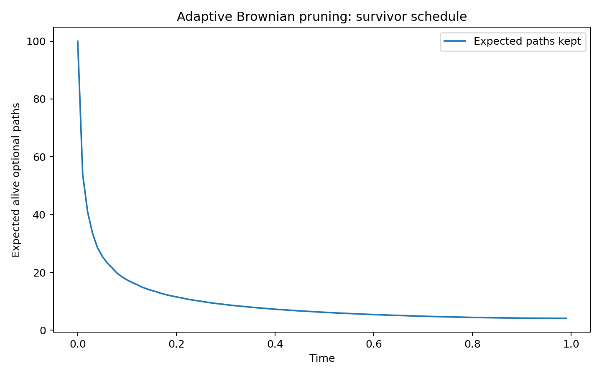
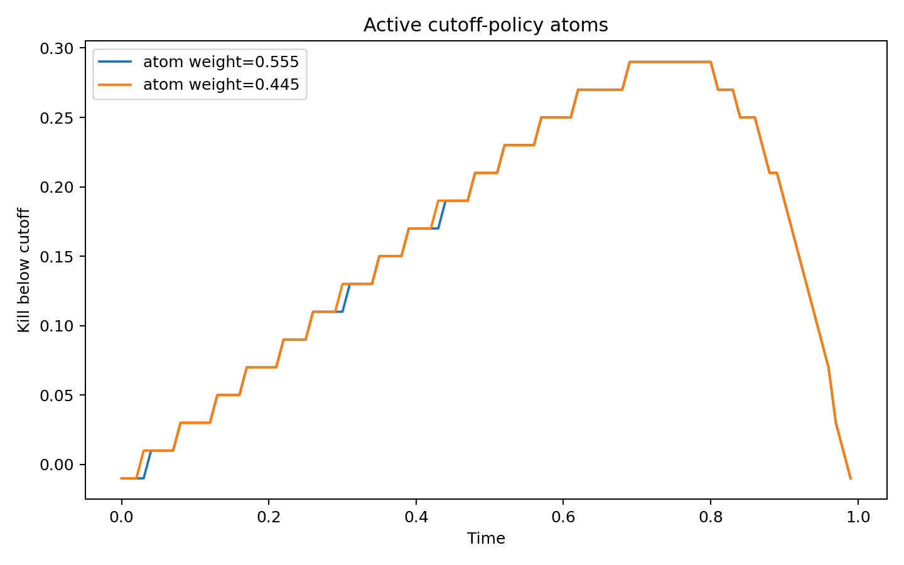
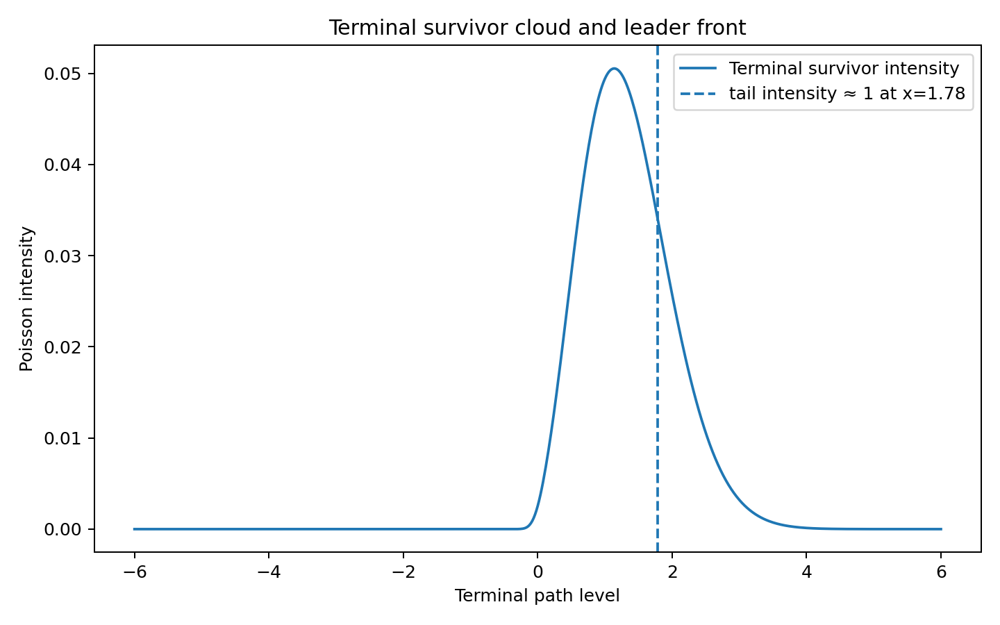

Budgeted Brownian Races
Wavefront pruning under a path-time budget.
A controller watches a cloud of Brownian paths, pays per unit time for every path kept alive, and may irreversibly prune. A finite path-time budget must be spent so as to maximize the expected terminal maximum. Which paths should be kept, and for how long?
Most paths are pruned early; the budget is spent on the few that can still reach the head of the race. Dashed: the wavefront, the region where one more path can still be terminally pivotal.
The optimal policy has a one-line description: retain a path while its propagated future pivotal value exceeds its carrying cost. The brownianbandit package solves the mean-field version of the problem numerically, with the machinery below.
The model
Optional paths form a Poisson cloud with a supplied initial intensity measure, and each alive path follows IID Brownian motion. At every time step a path is either killed irreversibly or kept for one more step; keeping one path for $dt$ costs $dt$. The budget constrains expected aggregate path-time. The terminal payoff is the maximum of a deterministic fallback $f$ and the surviving paths.
This is the Poissonized, expected-budget relaxation of the finite-$n$ race. For terminal survivor intensity $m$ supported on grid points $x_j$ with upper-tail intensity $R_j = \sum_{k \ge j} m_k$, the expected maximum is exactly
where $\Delta_j$ is the gap to the preceding attainable level. In English: each layer above the fallback pays its width times the probability that at least one survivor clears it. The gradient $\partial J / \partial m_j = \mathbb{E}[(x_j - M)^+]$ is the future pivotal value of placing one more infinitesimal path at $x_j$.
The method
$J$ is concave in $m$. For a fixed shadow price $\lambda$ on path-time, linearizing $J$ at the current intensity gives a one-particle obstacle problem,
whose keep set at each step is an upper tail of the state space: a wavefront policy, one kill-below cutoff per time step. A fully-corrective Frank–Wolfe (column-generation) method repeatedly adds the best-response wavefront policy to an active set and re-optimizes the mixture; bisection in $\lambda$ enforces the requested budget. The scheme is a discrete counterpart of the coupled obstacle/Fokker–Planck KKT system.
The demo
One committed, seeded example: horizon $T=1$, initial intensity 100,
path-time budget 10, fallback 0, on 100 time steps and 601 state
points. Adaptive wavefront pruning reaches an expected maximum of
1.960, against 1.643 for the best
one-shot screening policy (keep everyone until a single date, then
retain an upper tail) and 1.509 for static random
thinning at time zero. A 100,000-trial Monte Carlo puts the adaptive
policy at 1.9609 with standard error 0.0021; the discrepancy from the
closed form is well inside two standard errors, and a larger one would
falsify the layer-cake formula above. Regenerate everything with
python examples/run_mean_field_demo.py.

The survivor schedule: the optimal policy culls most of the field almost immediately and spends nearly the whole budget on a slowly thinning elite, about four paths strong at maturity. The kill-below cutoffs of the active policy atoms rise over most of the horizon and collapse near maturity, where a final step of carry is cheap next to the terminal option value:


Install
Core depends only on numpy and scipy.
pip install git+https://github.com/microprediction/brownianbandit.git
from brownianbandit import (
BrownianGrid, point_mass_initial_intensity, solve_for_budget,
)
grid = BrownianGrid.build(x_min=-6, x_max=6, n_space=601, dt=0.01, sigma=1.0)
initial = point_mass_initial_intensity(grid, total_intensity=100.0, x0=0.0)
solution = solve_for_budget(
target_path_time=10.0, grid=grid, initial_mass=initial, n_steps=100,
)
Scope
The solver addresses the mean-field relaxation: Poissonized population, expected rather than pathwise budget, discrete time and state. The finite-$n$ race with a hard budget, correlated diffusions, and the continuous-time limit are future work. The tests pin what is claimed: the pivotal-value gradient matches finite differences to 3e-7, spent path-time is monotone in the shadow price, and the closed-form expected maximum agrees with Poisson Monte Carlo.
Cite
@software{cotton2026brownianbandit,
author = {Cotton, Peter},
title = {brownianbandit: wavefront pruning of budgeted Brownian races},
year = {2026},
url = {https://github.com/microprediction/brownianbandit}
}
Comments welcome: open an issue on the repo.